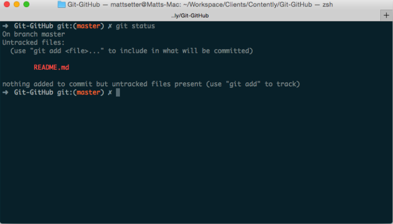

Git e GitHub são duas ferramentas muito interessantes para os desenvolvedores. O Git, apesar de sua complexidade, é a ferramenta de controle de versão favorita da maioria dos profissionais, de web designers a desenvolvedores kernel.
Já o GitHub é a plataforma de hospedagem de código mais utilizada do mundo e onde você encontrará de tudo, de experimentos lúdicos e simples ao próprio kernel do Linux.
Ambas as ferramentas são extremamente sofisticadas, proporcionando uma vasta gama de funcionalidades. E, para extrair o máximo de cada uma, é preciso estar preparado para as complexidades que se apresentarão pelo caminho.
Leia: Por que todo profissional deve aprender programação?
O Git é um sistema de controle de versão de arquivos e, antes de abordar mesmo conceitos básicos de GitHub, é importante entender como funciona esse repositório local.
Antes de qualquer coisa, é preciso que você instale algumas coisas, como a versão mais recente de Git para o seu sistema operacional. Se estiver usando o Linux, você poderá instalá-la usando seu gerenciador de pacotes.
Passo 2É preciso que você esteja minimamente familiarizado com a utilização da linha de comando. Caso ainda não esteja, tudo bem: este artigo trata tudo de forma clara e simples.
Passo 3Crie um repositório simples, composto por um arquivo de código e um README. Certifique-se de ter um diretório reservado para isso.
Com tudo preparado, agora vamos passar para um conjunto padrão de ações que você costuma seguir diariamente – mais especificamente, init, clone, add, commit, diff e log.
O primeiro passo para trabalhar com o Git é inicializar um repositório de projeto para que o próprio Git possa gerenciá-lo. Para isso, execute o comando git init . como demonstrado abaixo.
Um novo diretório oculto chamado .git surgirá no diretório de seu projeto. Nesse local, o Git armazena seus conjuntos de dados e informações de configuração.
Esta é uma maneira alternativa de acessar um repositório: clonando. Semelhante à verificação de um repositório em outros sistemas, executar a função git clone < repository URL > criará uma cópia completa do repositório remoto em seu sistema local. Agora, você pode modificá-lo da maneira que quiser.
Leia: Ele trocou a engenharia de software por data scienceEu sou um desenvolvedor PHP, então utilizarei essa ferramenta para o tutorial. Se preferir utilizar o Python, Go ou alguma outra linguagem, fique à vontade. Crie um novo arquivo, chamado index.php, no diretório de seu projeto e adicione o seguinte código:
Salve o arquivo e execute o comando git status. Isso exibirá o status atual de seu repositório, que, por sua vez, deve ser semelhante à captura de tela abaixo, com index.php listado como um novo arquivo não rastreado.
Agora, vamos focar apenas no index.php e deixar o README.md de lado, por enquanto. Para isso, execute o comando git add index.php. Em seguida, execute git status novamente e você verá index.php listado como um novo arquivo ““Changes to be committed,” e README.md dentre os arquivos não rastreados.
Agora você está pronto para o commit index.php. Antes disso, quero mostrar como configurar o editor que o Git utilizará quando você escrever mensagens de commit. Isso pode ser muito útil, especialmente se você não for um usuário de linha de comando.
Por padrão, o Git usa o programa especificado nas variáveis de ambiente $ VISUAL ou $ EDITOR que, em sistemas Linux, normalmente são pico, vi, vim ou emacs. Se não está familiarizado com isso, talvez seja melhor migrar para uma ferramenta que já conheça, como o Notepad, TextEdit, or Gedit.
Para isso, execute o seguinte comando:
git config --global core.editorExistem muitas outras mudanças de configurações possíveis, como seu nome ou e-mail, o padrão visual da mensagem de commit, etc. Para ver a lista completa, entre na seção de configuração do Git. Para esse tutorial, usarei o vim como meu editor. Mas use o que você preferir.
O commit do Git é muito parecido com o commit de outros sistemas de controle de versão, como o Subversion. Após iniciado o processo, adicione uma mensagem de commit que explique o motivo da alteração e pronto. O arquivo está alterado. Execute git commit. Seu editor abrirá e aparecerá o modelo de commit abaixo:
# Please enter the commit message for your changes. Lines starting # with '#' will be ignored, and an empty message aborts the commit. # On branch master # # Initial commit # # Changes to be committed: # new file: index.php # # Untracked files: # README.mdTal como acontece com o output do git status, você pode acompanhar o status de seu repositório de trabalho, o que facilita lembrar onde está trabalhando com commit e onde não está.
Uma boa mensagem de commit é composta por duas partes: uma mensagem curta, com menos de 72 caracteres, o que indica resumidamente (na voz ativa) a alteração que está sendo feita; e uma descrição mais longa e opcional.
No nosso caso, não é necessário escrever nada muito elaborado. Estamos apenas adicionando o arquivo ao repositório. Mas, se a alteração envolvesse um algoritmo mais complexo, seria importante compartilhar com seus colegas desenvolvedores o motivo pelo qual efetuou a mudança.
Agora, adicione apenas a mensagem “Adicionando arquivo de script ao repositório”, salve e feche o editor. Execute git status novamente e você verá que README.md continua listado como não rastreado.
. O que vimos até aqui são os fundamentos do Git e do GitHub. E, embora haja muitos conceitos a serem adotados, uma vez que você consegue entender o básico, o domínio desses fundamentos virão com o tempo.
Não temos tempo para tratarmos de tudo aqui e existe muito mais a ser explorado. Para isso, a comunidade por trás dessas duas ferramentas servirá como um indispensável suporte colaborativo. Você estará em boas mãos.
Leia: 21 (possíveis) empregos do futuro para conhecer hoje
Abaixo, confira os links para leituras e estudos complementares. Com tudo isso em mãos, você encontrará quase tudo que precisa para se tornar um mestre em Git e GitHub.